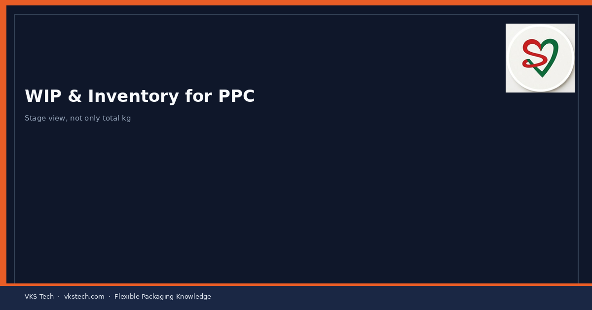
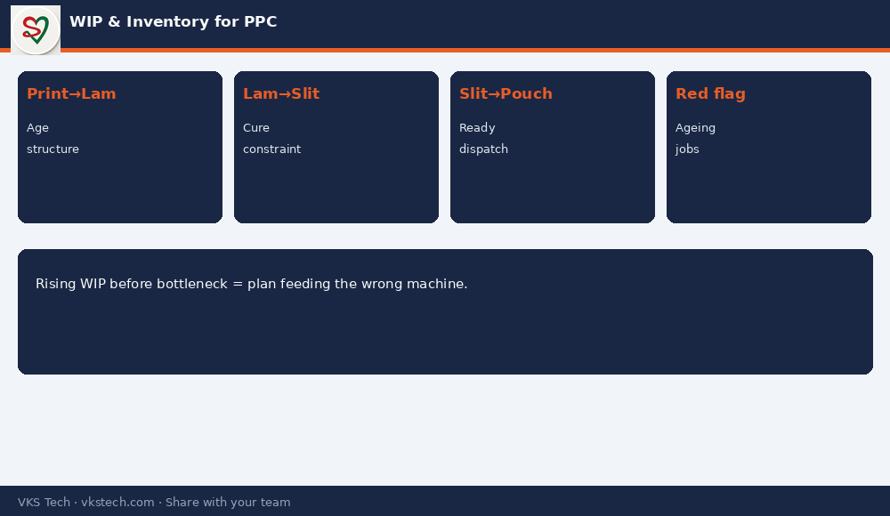

📦 High WIP Feels Like “We Are Busy”. Often It Means the Next Process Is Blocked or the Plan Is Wrong.
📖 10-min read · Inventory · PPC
In converting, WIP sits between print–lam, lam–slit and slit–pouch. Too little and machines starve. Too much and cash, space and quality risk rise (ageing adhesive cure, damage, wrong FIFO). PPC must see WIP by stage, not only total kg in the plant.
📌 PPC WIP View
- Printed waiting for lam (age and structure)
- Laminated waiting for slit (cure time constraints)
- Slit waiting for pouch or dispatch
- Ageing risk jobs flagged red

💡 Signal: Rising WIP before a bottleneck process means the plan is feeding the wrong machine first.
📦 ऊँचा WIP “हम व्यस्त हैं” जैसा लगता है। अक्सर मतलब होता है अगली प्रोसेस ब्लॉक है या प्लान गलत है।
📖 10-मिनट पढ़ें · इन्वेंटरी · PPC
💡 संकेत: बॉटलनेक से पहले बढ़ता WIP = प्लान गलत मशीन को पहले फीड कर रहा है।